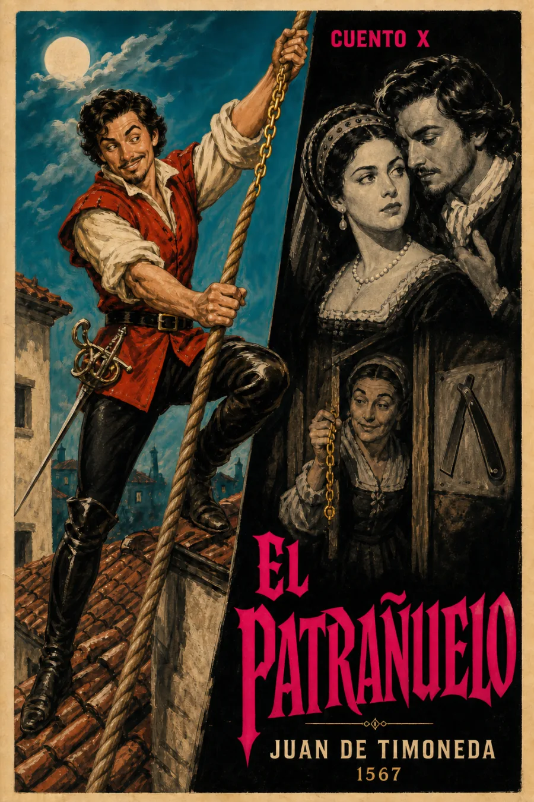

Escucha ahora
SINOPSIS
Uno de los veintidós relatos de El Patrañuelo (1567) de Juan de Timoneda, colección de "patrañas" o cuentos breves de entretenimiento adaptados de fuentes italianas y clásicas —entre ellas el propio Boccaccio— al gusto español. Timoneda fue clave en la difusión de la narrativa breve europea en la España del Siglo de Oro.
Texto de consulta: El Patrañuelo, Biblioteca Virtual Miguel de Cervantes, edición digital basada en Valencia, Joan Mey, 1567.
LECTURA
Patraña décima · Relato completo
RESEÑAS

Bueno